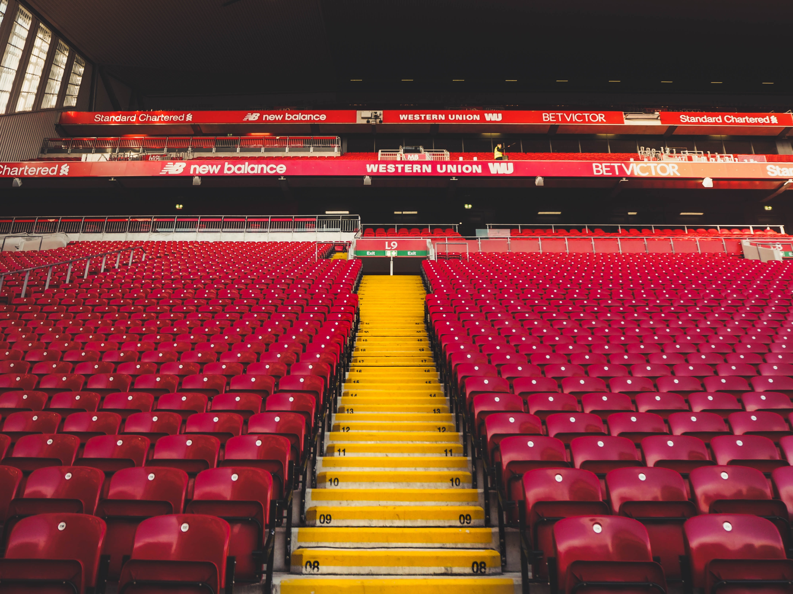

It is a sea port on the right side of the mouth of the Merji River, facing the Irish Sea. The origin of the city is said to be around the 8th century, but what appeared in history was in 1207 when King John built a city in the current Liverpool central district and allowed autonomy, mainly serving as a port of contact with Ireland. Since then, it has declined once due to the effects of the Black Death and the Rose War (1455-1485), but its importance as a trade port has increased since the 18th century when trade with the new continent began following Europe and Africa. Moreover, Liverpool's transit port of slave trade showed progress beyond the two ports of Chester and Bristol, which had flourished until then. After the mid-18th century, it flourished as a central city leading the British Industrial Revolution. Until recently, Liverpool's port facilities are comparable to London's, but they are currently on the decline due to the industrial structure behind the scenes and the reduction of trade with the United States and West Africa. Major exports include chemicals, steel, machinery and metals, while imports include grain, sugar, wood, crude oil, iron ore, etc., whose main partners are the United States and Canada, and serve as a water-free notification base and center of commercial activity in Midland. As a result of the efforts to promote the industry as a countermeasure against the recession after World War I, various factories using imported raw materials such as milling, tobacco manufacturing, oil refining, and Jedang were located. However, as an economic function, it serves as a distribution base in northern England's industrial zone, which is behind the scenes. Recently, factories such as electric machinery, electronic equipment, jet engines, and precision machinery were also built, and about 32 percent of the employed people are engaged in distribution and transportation. The downtown area is semi-circular around the downtown area about 5km upstream from the estuary, and there is a dock, warehouse, and factory in the lower part of the city. It is connected to the Birkenhead of the alternative by two lower tunnels for railways and roads. There are many buildings and cultural facilities in the city. Among them, the city hall built in the 18th century, as well as museums displaying various steam engines, machinery, locomotives, and transportation facilities during the Industrial Revolution, are popular tourist attractions. There are various public buildings in the 19th century, Anglican Church in the 20th century, and Catholic Church in Rome. In addition to Liverpool University, various public libraries, art galleries, and museums, there are many excellent private art galleries and museums, and Liverpool Symphony Orchestra is famous. But the biggest factor behind Liverpool's fame is that the legendary rock band Beatles are from Liverpool, attracting countless tourists to remember the Beatles' music and their performances. Liverpool [Liverpool] (Doosan White)
